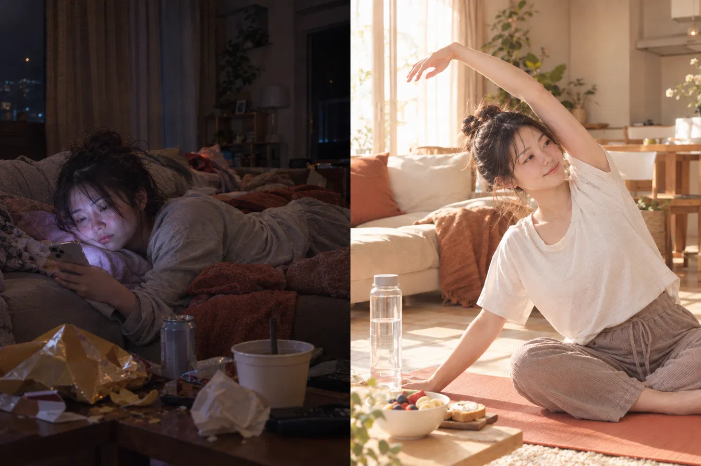

運動習慣トレーナー まろ
ゆるく
続けられる人に
なる。
痩せるためじゃない。
毎晩「今日もできた」って思って眠るための運動習慣。
あなたのペースを、私がずっと見てます。
 無料相談はこちら
無料相談はこちら
＼ ズボラ筋トレ専門 ／
運動習慣トレーナー まろ
痩せるためじゃない。
毎晩「今日もできた」って思って眠るための運動習慣。
あなたのペースを、私がずっと見てます。
無料相談はこちら
＼ ズボラ筋トレ専門 ／
小さな継続が、体を変える。
こんな人へ
Before → After

※画像はイメージです
Before
受ける前の私
After
3ヶ月後の私
なぜ3ヶ月？
ロンドン大学の研究で、行動が習慣になるまで平均66日かかることがわかっています。3ヶ月あれば「頑張って運動する」が「気づいたらやってる」に変わる。意志の力に頼らなくてよくなります。
最初の1〜2ヶ月で変わるのは筋肉ではなく「神経」。体が筋肉の使い方を思い出す期間です。筋肉そのものが目に見えて変わり始めるのが8〜12週目。3ヶ月で初めて「あれ、変わってきた」を実感できます。
筋肉が増えると基礎代謝が上がり、何もしていない時間の消費カロリーが増えます。この「太りにくい体への切り替わり」が始まるのが3ヶ月目です。
なぜ30代から？
筋肉は何もしないと年齢とともに少しずつ減っていきます。筋肉が減ると代謝も下がり、同じ生活でも太りやすくなります。
骨の量は若いうちがピーク。40代以降は女性ホルモンが減り、骨が弱くなりやすくなります。筋トレの刺激は骨を守る味方です。
姿勢を支える筋肉が弱ると、疲れやすく痛めやすい体に。今から少し動かしておくだけで違います。
体も気分も変わりやすい40代。運動習慣がある人は、その変化に合わせて自分で調整しやすくなります。
プログラム
1ヶ月目
まず運動するクセをつける。毎日できる種目を一緒に決めて、完璧じゃなくていい環境を作る。
2ヶ月目
習慣になってきた種目を少しレベルアップ。自分でできる感覚を作っていく。
3ヶ月目
トレーナーなしでも動ける体を作る。自分だけのルーティンを完成させて卒業。
週1回・60分・全12回
違い

受けてない人

受けてる人
※画像はイメージです
料金
まずは気軽に試してみたい人に
4,980円
3ヶ月で続けられる人になりたい人に
9,800円
今だけモニター価格 3,000円
一度やめちゃった人・卒業後にまた戻りたい人に
3,980円
お支払いはPayPayで。オンライン（Zoom）で受けられます。
卒業後
「続くかな？」って不安なままで大丈夫。
LINEで気軽に話しかけてください。
無理な勧誘は一切しません